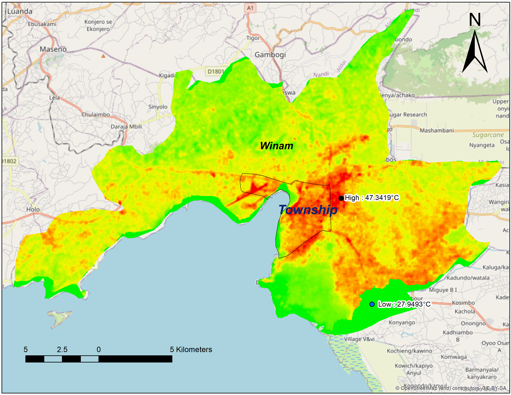
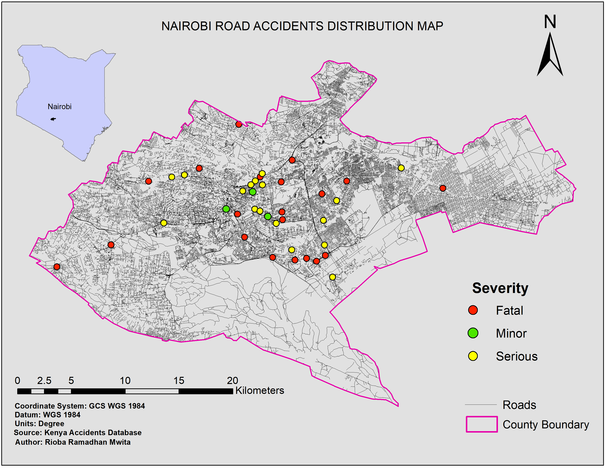

My Portfolio
Land Survey
Since 2022, while pursuing my studies, I have gained extensive hands-on experience in land surveying through seasonal and part-time roles with professional surveying firms. My work has covered both field operations and technical documentation, giving me strong practical competence in real-world survey environments.
Homeland Surveyors (Seasonal)
Feb 2022 – Nov 2025 | Nyeri, Kenya (On-site)
From my second year in campus, I worked both part-time and full-time with Homeland Surveyors, gaining experience in cadastral, geodetic, topographic, and plane surveys. I regularly operated RTK and GPS equipment and prepared survey drawings and reports using AutoCAD. This role strengthened my fieldwork skills and deepened my understanding of survey processes critical to land development and parcel mapping.
Geolink Surveyors (Part-time)
Dec 2024 – Jan 2025 | Kenya (On-site)
Participated in land and topographic survey projects, supporting field data collection, beacon identification, measurements, and preparation of survey records. Assisted in the use of GPS and Reak Time Kinematics equipment and contributed to accurate mapping and documentation.
Octa-Surveys and Engineering (Part-time)
Nov 2025 – Dec 2025 | Kwale, Kenya (On-site)
Worked as a senior surveyor conducting land and topographic surveys. Responsibilities included field data collection, involvement in survey activities, and preparation of technical survey documentation to ensure accuracy.
Key Skills:
Land Surveying, Topographic Surveys, Cadastral Surveys, RTK & GPS Operations, Total Station, AutoCAD, Parcel Mapping
GIS Mapping
I undertake GIS mapping and spatial analysis to support evidence-based decision-making in planning, environmental management, disaster risk reduction, and urban development.
GIS & Remote Sensing Trainee (Industrial Attachment)
Directorate of Resource Surveys and Remote Sensing (DRSRS)
Apr 2024 – Jul 2024 | Nairobi County, Kenya (On-site)
During my industrial attachment at the Directorate of Resource Surveys and Remote Sensing (DRSRS), I gained hands-on experience in processing and interpreting satellite imagery for environmental monitoring and land use analysis. I learned to prepare maps, manage spatial datasets, and assisted with road network mapping. Attending seminars and workshops enhanced my understanding of GIS and remote sensing applications, improving both my technical and analytical skills in real-world projects.
Projects & Practical Experience
Academic Research Project
Determination of the Most Suitable Dumpsite Location in Kesses Subcounty, Uasin Gishu County, Kenya
-
Conducted a GIS-based suitability analysis to determine the most appropriate location for a dumpsite, integrating factors such as land use, slope, hydrology, settlement proximity, and environmental constraints. Produced hazard and environmental risk maps to guide planning decisions in urban and peri-urban areas, demonstrating practical application of spatial analysis and decision-support tools in environmental management.
Government-Linked Project
Kiambu County
- Field data collection and spatial data processing for road updates and infrastructure planning.
Freelance GIS Projects
-
I have undertaken GIS projects for clients involving environmental mapping, land fragmentation analysis, land use/land cover change detection, water availability and hydrological assessments, urban agriculture suitability studies, and forest cover monitoring. I produced detailed shapefiles, maps, spatial datasets, and analytical reports, applying methods such as remote sensing classification, overlay analysis, suitability modeling, and change detection. These projects enabled clients to make evidence-based decisions for environmental management, urban planning, and sustainable resource assessment, while strengthening my practical expertise in geospatial analysis and data-driven problem-solving.
The examples below highlight just a few of the many mapping projects I have completed, and I can create custom maps on request.
Air Pollution Exposure Mapping
This section covers mapping and analysis of population exposure to air pollutants. The analysis integrates emission sources, land use patterns, meteorological data, and settlement distribution to understand exposure risks. For example, in Nakuru County:

In central Nakuru County, particularly in the town center, population exposure is high to very high due to dense traffic, industrial emissions, and frequent use of solid fuels for cooking. Concentrations of key pollutants such as PM₂.₅ reach up to 45–55 µg/m³, while NO₂ and CO levels are elevated near major roads. In contrast, rural areas of Nyandarua County, around Tumaini, show lower exposure levels (PM₂.₅ ~15–20 µg/m³) because of lower population density, fewer emission sources, and more open vegetation. This approach identifies vulnerable populations and informs public health and urban planning interventions to reduce air pollution impacts.
Land Use/Land Cover Mapping and Change Detection
This section presents an example mapping and analysis of land cover patterns using satellite imagery to assess vegetation distribution and changes over time. It includes GIS-based classification, post-classification change detection, and spatial analysis to identify stable vegetation, areas of degradation, and zones of regeneration. For example, the images show forest cover in 2017 and 2025, and the accompanying change detection map highlights areas of stable forest, deforestation, regeneration, and land conversion. These outputs—maps, shapefiles, and statistical summaries—help differentiate subtle changes in vegetation over time, providing actionable insights for environmental management, urban planning, and sustainable resource use.

Change detection analysis is essential because it provides a precise, quantitative understanding of how land cover evolves over time, rather than relying on visual comparisons of two images side by side. While side-by-side satellite images can suggest areas of vegetation gain or loss, they do not provide exact measurements or classifications of the types and magnitude of change. Change detection maps systematically identify transitions—such as dense forest becoming sparse, or agricultural land converting to built-up areas—allowing planners, researchers, and environmental managers to accurately monitor degradation, regeneration, and stability. This approach supports evidence-based decision-making for resource management, conservation planning, and sustainable land use.

| Change Type | Area (ha) | Area (km²) | Interpretation |
|---|---|---|---|
| Dense → Dense | 192,042.99 | 1920.43 | Stable dense vegetation |
| Sparse → Sparse | 88,611.57 | 886.12 | Stable sparse vegetation |
| Sparse → Dense | 27,157.50 | 271.58 | Vegetation regeneration |
| Dense → Sparse | 17,501.13 | 175.01 | Vegetation degradation |
| Dense → Other | 430.92 | 4.31 | Deforestation / land conversion |
| Sparse → Other | 2,842.74 | 28.43 | Loss of vegetation |
| Other → Sparse | 1,304.28 | 13.04 | New vegetation growth |
| Other → Dense | 33.84 | 0.34 | Afforestation |
| Other → Other | 7,918.20 | 79.18 | Stable non-vegetation |
The change detection analysis of Nyeri County between the two time periods highlights how different land cover types have transformed over time. Areas of dense vegetation that remained dense represent stable forested regions, while sparse areas that stayed the same indicate stable open or agricultural land. Some sparse areas transitioned to dense vegetation, showing vegetation regeneration, whereas portions of dense vegetation became sparse, reflecting vegetation degradation due to land clearing or human activities. Small sections of dense and sparse vegetation converted to non-vegetated land, indicating deforestation or land conversion, while areas previously non-vegetated that became sparse or dense reflect new growth and afforestation. Finally, areas that remained non-vegetated demonstrate stable bare land or urban zones. Overall, the analysis reveals the patterns of stability, degradation, and regeneration, providing critical insights for forest management, environmental planning, and sustainable land use decision-making in the county.
Urban Heat Island Analysis
This section highlights Urban Heat Island (UHI) analysis, which examines how built environments and human activities in cities lead to elevated surface and air temperatures compared to surrounding rural areas. Understanding UHI patterns is crucial for urban planning, as it helps identify hotspots, informs strategies to mitigate heat stress, and supports the design of greener, more climate-resilient cities.

The Land Surface Temperature (LST) map of Kisumu City reveals that the central business district and densely built-up areas exhibit temperatures exceeding 35°C, with some hotspots reaching up to 37–38°C, while peripheral areas with more vegetation and water bodies register lower temperatures of 28–30°C. This spatial variation illustrates the Urban Heat Island (UHI) effect, where impervious surfaces, reduced vegetation cover, and high building density increase heat retention. The temperature difference of 7–10°C between urban cores and surrounding green or water-rich areas underscores the need for targeted urban planning interventions, including green infrastructure, urban tree planting, and reflective materials, to mitigate localized heat stress and improve urban thermal comfort.
Interactive Web Mapping
This section highlights web mapping analysis, which examines how spatial data can be visualized and explored through interactive online maps. Web mapping enables the integration of geographic information, user interaction, and real-time visualization, making it easier to identify spatial patterns and understand spatial relationships within geographic environments. These approaches support accessible data sharing, informed analysis, and effective decision-making in spatial planning and management.

The interactive web map of ferry locations in Kenya illustrates the spatial distribution of ferry points along major water bodies, particularly Lake Victoria and the Indian Ocean coastline. These ferry locations are closely linked to areas of high human activity and transport demand, highlighting their importance in facilitating mobility, trade, and regional connectivity. Through interactive features such as clickable markers, pop-up information, and layer controls, the web map allows users to explore ferry infrastructure in its geographic context, demonstrating the value of web mapping in visualizing and communicating.
Road Accident Hotspot Analysis
This section presents a Road Accident Hotspot Analysis, focusing on the spatial distribution and concentration of traffic accidents within the study area. The analysis is intended to support road safety planning by identifying high-risk locations that require targeted interventions.

The accident distribution map displays the spatial locations of road traffic accident points recorded in Kenya during the year 2016, plotted along the road network and classified by severity (fatal (loss of life), serious (severe injury), and minor (slight injury or property damage)). These points are derived from actual traffic accident records, and their clustering along major road corridors and intersections highlights patterns in incident occurrence relative to the existing road network. While this map primarily illustrates where accidents occurred, it establishes a clear spatial foundation that can be further enhanced by integrating additional datasets — such as traffic volumes, land use, and population distribution — to more comprehensively understand the underlying risk factors influencing accident occurrence.

The kernel density hotspot map identifies areas with a high concentration of road traffic accidents, revealing significant hotspots along major highways and urban centers. These hotspots indicate locations where accidents are more frequent, suggesting underlying risk factors such as high traffic volumes, complex intersections, or inadequate road infrastructure. By pinpointing these high-risk areas, the analysis provides critical insights for road safety planning, enabling authorities to prioritize interventions such as improved signage, traffic calming measures, and enhanced enforcement to reduce accident rates and enhance overall road safety.
Research Assistance
I have contributed to a range of research and applied projects across counties such as Uasin Gishu, Nyeri, Kericho, and Machakos, including agricultural studies, environmental assessments, water resource analyses, and urban agriculture research. My work emphasizes GIS-based approaches, providing field data collection, spatial analysis, mapping, and analytical reporting. I have undertaken freelance GIS projects for clients involving environmental mapping, land fragmentation analysis, land use/land cover change detection, water availability and hydrological assessments, urban agriculture suitability studies, and forest cover monitoring. These projects involved producing detailed shapefiles, maps, spatial datasets, and analytical reports using methods such as remote sensing classification, overlay analysis, suitability modeling, and change detection. By applying these techniques, I enabled clients to make evidence-based decisions for environmental management, urban planning, and sustainable resource assessment, while further developing my practical expertise in geospatial analysis and data-driven problem-solving.
Web & App Development
I design modern web applications and database-driven websites. My work combines clean user interfaces with efficient backend architecture, emphasizing usability, speed, and scalability.
Projects
Homeland Surveyors Website
Oct 2025 – Nov 2026 | Homeland Surveyors
Developed a fully functional website for Homeland Surveyors, streamlining workflow from paperwork to digital management.
Chandaria Logistics Platform
Dec 2025 – Jan 2026 | Chandaria Industries Ltd
Built a web-based logistics system to manage operations and data for Chandaria, with dashboards, tracking, and secure databases.
Environmental Services
I provide comprehensive support in environmental services, including environmental impact assessments, sustainability planning, and natural resource management. My work integrates GIS mapping, spatial analysis, and detailed reporting to evaluate environmental risks, monitor land and water resource use, and assess the impacts of development projects. I conduct suitability analyses, overlay assessments, and trend mapping to guide sustainable planning and management decisions. By producing accurate spatial datasets, analytical reports, and visualizations, I help organizations, researchers, and stakeholders implement practices that balance development goals with environmental conservation. My projects have supported informed decision-making in areas such as urban planning, forest and water resource management, agricultural sustainability, and biodiversity conservation.
Curriculum Vitae
You can view or download my detailed Curriculum Vitae for full academic, technical, and professional background.
View My CV